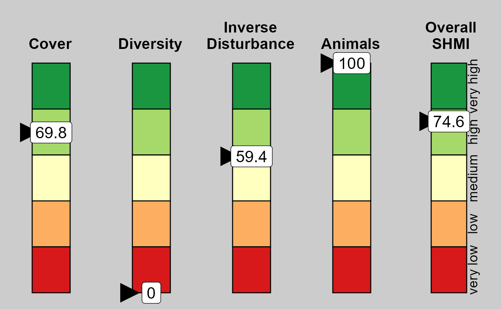
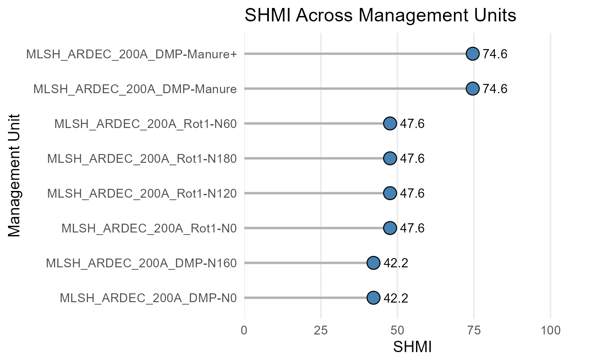

Introduction
The Soil Health Management Index (SHMI) provides a quantitative, rotation‑scale assessment of soil health management practices. It integrates four biologically grounded sub-indices:
-
Cover — seasonal plant presence
-
Diversity — rotation-scale crop diversity (Hill
numbers)
-
Inverse Disturbance — mechanistic mixing-efficiency
× depth metric
- Organic Inputs — amendments and animal presence
This vignette provides a complete walk-through of the SHMI workflow using the functions in the SHMI R package.
📘 Minimal Example
A complete SHMI workflow in just a few lines
library(SHMI)
# 1. Retrieve the sample Excel file
example <- get_shmi_example()
# 2. Prepare inputs (validates structure and expands events)
df <- prepare_shmi_inputs(example)
#> ✅ Excel input validation passed.
#> Input summary:
#> # A tibble: 1 × 6
#> sheets_present mgt_units crop_rows disturbance_rows amendment_rows animal_rows
#> <int> <int> <int> <int> <int> <int>
#> 1 5 100 40 500 35 0
#> Excluding 0 management units:
#> -
#>
#> Included 8 management units for sheet Mgt_Unit:
#> - MLSH_ARDEC_200A_DMP-N0
#> - MLSH_ARDEC_200A_DMP-Manure
#> - MLSH_ARDEC_200A_DMP-N160
#> - MLSH_ARDEC_200A_DMP-Manure+
#> - MLSH_ARDEC_200A_Rot1-N0
#> - MLSH_ARDEC_200A_Rot1-N60
#> - MLSH_ARDEC_200A_Rot1-N120
#> - MLSH_ARDEC_200A_Rot1-N180
#> Sheet 'Animal_Diversity' is empty; returning empty tibble.
# 3. Compute sub-index scores and SHMI
result <- build_shmi(df)
#> ✅ SHMI input validation passed.
#> SHMI computed using official national settings.
head(result)
#> $indicator_df
#> # A tibble: 8 × 6
#> MGT_combo SHMI Cover Diversity InvDist Animals
#> <chr> <dbl> <dbl> <dbl> <dbl> <dbl>
#> 1 MLSH_ARDEC_200A_DMP-Manure 74.6 69.8 0 59.4 100
#> 2 MLSH_ARDEC_200A_DMP-Manure+ 74.6 69.8 0 59.4 100
#> 3 MLSH_ARDEC_200A_DMP-N0 42.2 69.8 0 59.4 0
#> 4 MLSH_ARDEC_200A_DMP-N160 42.2 69.8 0 59.4 0
#> 5 MLSH_ARDEC_200A_Rot1-N0 47.6 70.1 0 100 0
#> 6 MLSH_ARDEC_200A_Rot1-N120 47.6 70.1 0 100 0
#> 7 MLSH_ARDEC_200A_Rot1-N180 47.6 70.1 0 100 0
#> 8 MLSH_ARDEC_200A_Rot1-N60 47.6 70.1 0 100 0
#>
#> $settings_used
#> $settings_used$w_winter
#> [1] 0.13
#>
#> $settings_used$w_spring
#> [1] 0.129
#>
#> $settings_used$w_summer
#> [1] 0.513
#>
#> $settings_used$w_fall
#> [1] 0.227
#>
#> $settings_used$hill
#> [1] 2
#>
#> $settings_used$max_div
#> [1] 8
#>
#> $settings_used$w_amend
#> [1] 1
#>
#> $settings_used$w_animals
#> [1] 1
#>
#> $settings_used$w_cover
#> [1] 0.492
#>
#> $settings_used$w_div
#> [1] 0.052
#>
#> $settings_used$w_dist
#> [1] 0.131
#>
#> $settings_used$w_ani
#> [1] 0.324
#>
#>
#> $expert_mode
#> [1] FALSE
#>
#> $shmi_version
#> [1] "1.0.2"
#>
#> $timestamp
#> [1] "2026-04-16 16:48:49 MDT"
# 4. Plot the results
# Plot the first management unit
plot_shmi_gauge(result$indicator_df, row = 1)
# Plot all available management units
plot_shmi_lollipop(result$indicator_df)
1. Preparing Inputs
The SHMI workflow begins with a standardized Excel workbook containing:
-
Mgt_Unit
-
Crop_Diversity
-
Soil_Disturbance
-
Amendment_Diversity
Animal_Diversity
The function prepare_shmi_inputs():
- reads and validates all sheets
- harmonizes crop windows
- constructs rotation bounds
- builds daily grids
- computes daily disturbance
- assembles amendment and animal events
# Example (replace with your file path)
example_file <- SHMI::get_shmi_example()
inputs <- prepare_shmi_inputs(example_file, verbose = TRUE)
#> ✅ Excel input validation passed.
#> Input summary:
#> # A tibble: 1 × 6
#> sheets_present mgt_units crop_rows disturbance_rows amendment_rows animal_rows
#> <int> <int> <int> <int> <int> <int>
#> 1 5 100 40 500 35 0
#> Excluding 0 management units:
#> -
#>
#> Included 8 management units for sheet Mgt_Unit:
#> - MLSH_ARDEC_200A_DMP-N0
#> - MLSH_ARDEC_200A_DMP-Manure
#> - MLSH_ARDEC_200A_DMP-N160
#> - MLSH_ARDEC_200A_DMP-Manure+
#> - MLSH_ARDEC_200A_Rot1-N0
#> - MLSH_ARDEC_200A_Rot1-N60
#> - MLSH_ARDEC_200A_Rot1-N120
#> - MLSH_ARDEC_200A_Rot1-N180
#> Sheet 'Animal_Diversity' is empty; returning empty tibble.The returned object is a named list containing:
-
rot_bounds
-
crop_harmonized
-
daily
-
daily_dist
-
amend
-
animal
- and additional metadata
These objects feed directly into build_shmi().
2. Computing SHMI
Once inputs are prepared, computing SHMI is straightforward:
shmi <- build_shmi(inputs)
#> ✅ SHMI input validation passed.
#> SHMI computed using official national settings.
shmi$indicator_df
#> # A tibble: 8 × 6
#> MGT_combo SHMI Cover Diversity InvDist Animals
#> <chr> <dbl> <dbl> <dbl> <dbl> <dbl>
#> 1 MLSH_ARDEC_200A_DMP-Manure 74.6 69.8 0 59.4 100
#> 2 MLSH_ARDEC_200A_DMP-Manure+ 74.6 69.8 0 59.4 100
#> 3 MLSH_ARDEC_200A_DMP-N0 42.2 69.8 0 59.4 0
#> 4 MLSH_ARDEC_200A_DMP-N160 42.2 69.8 0 59.4 0
#> 5 MLSH_ARDEC_200A_Rot1-N0 47.6 70.1 0 100 0
#> 6 MLSH_ARDEC_200A_Rot1-N120 47.6 70.1 0 100 0
#> 7 MLSH_ARDEC_200A_Rot1-N180 47.6 70.1 0 100 0
#> 8 MLSH_ARDEC_200A_Rot1-N60 47.6 70.1 0 100 0The output includes:
-
Cover
-
Diversity
-
InvDist
-
Animals
- SHMI (weighted composite)
as well as:
-
settings_used
-
expert_mode
-
timestamp
shmi_version
3. Expert Mode
By default, SHMI uses the official national settings (locked mode). To explore scenarios or conduct research, you may override settings:
custom <- list(
# cover
w_winter = 0.25,
w_spring = 0.25,
w_summer = 0.25,
w_fall = 0.25,
# diversity
hill = 2,
max_div = 8,
# SHMI weights
w_cover = 0.25,
w_div = 0.25,
w_dist = 0.25,
w_ani = 0.25
)
shmi_exp <- build_shmi(inputs, settings = custom, expert_mode = TRUE)
#> ✅ SHMI input validation passed.
#> Expert mode enabled: SHMI scores will NOT be comparable to the national SHMI scale.When expert_mode = TRUE, SHMI values are not comparable
to the national SHMI scale.
4. Sub-Index Details
This section demonstrates how each sub-index is computed individually.
4.1 Cover
compute_cover(inputs$daily, inputs$rot_bounds)
#> # A tibble: 8 × 2
#> MGT_combo Cover
#> <chr> <dbl>
#> 1 MLSH_ARDEC_200A_DMP-Manure 69.8
#> 2 MLSH_ARDEC_200A_DMP-Manure+ 69.8
#> 3 MLSH_ARDEC_200A_DMP-N0 69.8
#> 4 MLSH_ARDEC_200A_DMP-N160 69.8
#> 5 MLSH_ARDEC_200A_Rot1-N0 70.1
#> 6 MLSH_ARDEC_200A_Rot1-N120 70.1
#> 7 MLSH_ARDEC_200A_Rot1-N180 70.1
#> 8 MLSH_ARDEC_200A_Rot1-N60 70.1Cover is based on seasonal plant-days, normalized by rotation length and weighted by seasonal importance.
4.2 Diversity
compute_diversity(inputs$crop_harmonized, inputs$daily)
#> # A tibble: 8 × 4
#> MGT_combo D Diversity_raw Diversity
#> <chr> <dbl> <dbl> <dbl>
#> 1 MLSH_ARDEC_200A_DMP-Manure 0 0 0
#> 2 MLSH_ARDEC_200A_DMP-Manure+ 0 0 0
#> 3 MLSH_ARDEC_200A_DMP-N0 0 0 0
#> 4 MLSH_ARDEC_200A_DMP-N160 0 0 0
#> 5 MLSH_ARDEC_200A_Rot1-N0 0 0 0
#> 6 MLSH_ARDEC_200A_Rot1-N120 0 0 0
#> 7 MLSH_ARDEC_200A_Rot1-N180 0 0 0
#> 8 MLSH_ARDEC_200A_Rot1-N60 0 0 0Diversity uses Hill-number entropy metrics at the rotation scale, with mixture expansion and species-level plant-day aggregation.
4.3 Inverse Disturbance
compute_disturbance(inputs$daily_dist, inputs$rot_bounds)
#> # A tibble: 8 × 2
#> MGT_combo InvDist
#> <chr> <dbl>
#> 1 MLSH_ARDEC_200A_DMP-Manure 59.4
#> 2 MLSH_ARDEC_200A_DMP-Manure+ 59.4
#> 3 MLSH_ARDEC_200A_DMP-N0 59.4
#> 4 MLSH_ARDEC_200A_DMP-N160 59.4
#> 5 MLSH_ARDEC_200A_Rot1-N0 100
#> 6 MLSH_ARDEC_200A_Rot1-N120 100
#> 7 MLSH_ARDEC_200A_Rot1-N180 100
#> 8 MLSH_ARDEC_200A_Rot1-N60 100Disturbance is computed using a mechanistic mixing-efficiency × depth model:
- cumulative mechanical energy
- profile penetration (Tₜ)
- annual aggregation
- rotation averaging
- scaling to 0–100
4.4 Organic Inputs
compute_orginput(inputs$rot_bounds, inputs$amend, inputs$animal)
#> # A tibble: 8 × 3
#> MGT_combo events_per_year Animals
#> <chr> <dbl> <dbl>
#> 1 MLSH_ARDEC_200A_DMP-Manure 1 100
#> 2 MLSH_ARDEC_200A_DMP-Manure+ 1 100
#> 3 MLSH_ARDEC_200A_DMP-N0 0 0
#> 4 MLSH_ARDEC_200A_DMP-N160 0 0
#> 5 MLSH_ARDEC_200A_Rot1-N0 0 0
#> 6 MLSH_ARDEC_200A_Rot1-N120 0 0
#> 7 MLSH_ARDEC_200A_Rot1-N180 0 0
#> 8 MLSH_ARDEC_200A_Rot1-N60 0 0Organic inputs combine amendment and animal events using user-defined weights.
5. Interpreting SHMI
The final SHMI score reflects:
- year-round cover
- crop diversity
- reduced soil disturbance
- organic inputs
Higher SHMI values indicate management systems that are more supportive of soil health.